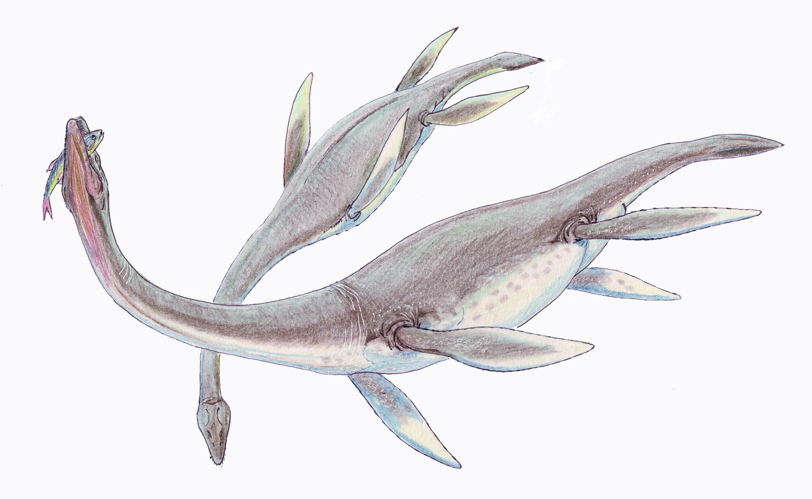
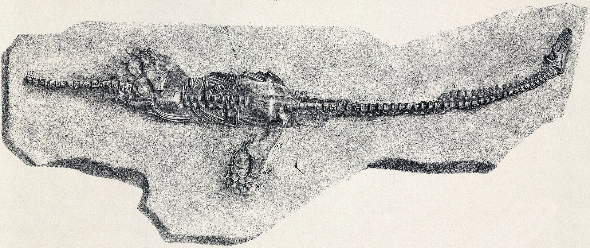

Le plésiosaure de Mary Anning
Plesiosaurus
Un dessin de l’animal vivant, et une planche ancienne du squelette. Pas une longueur inventée.
Dessin : Dmitry Bogdanov, CC BY-SA 3.0, via Wikimedia Commons. Concept d’artiste, pas une photographie. Page du dessin

Il n’y a pas de film de cet animal fait pour ce site. L’image derrière le titre est un dessin. L’image plus bas est une planche ancienne de squelette, pas une photographie des os.
Ce que l’on sait
- Plesiosaurus dolichodeirus. Une occurrence Paleobiology Database du type est du Sinémurien tardif, de 199,5 à 192,9 millions d’années sur cette échelle. Liste d’occurrences Paleobiology Database
- Mary Anning a trouvé le premier squelette articulé. Le Natural History Museum de Londres raconte cette part de l’histoire. Natural History Museum, Londres
- Le dessin derrière le titre est le concept de Dmitry Bogdanov de l’animal vivant. Ce n’est pas une photographie. Le fichier d’origine fait 1800 pixels de large. Cette page en sert 1800, sans agrandir. Page du dessin
- L’image plus bas est la figure ancienne de J. Dinkel d’un squelette du Lias inférieur. Le fichier d’origine fait 3505 pixels de large. Cette page en sert 1920, sans agrandir. Planche du squelette

Ce que cette page ne dit pas
- Aucune longueur du corps n’est écrite sur les sources citées ici, donc cette page ne dessine pas une personne à côté de l’animal.
- L’épingle est la côte jurassique déjà sur la carte du monde, la côte du Dorset et de l’est du Devon. Ce n’est pas le musée de Londres, et ce n’est pas un dessin de l’animal. Le repère a été fait pour ce site. Créé par le fondateur et SI.

Sources (4)
- Natural History Museum, Londres : les fossiles de Mary Anning
- Occurrences Paleobiology Database de Plesiosaurus dolichodeirus
- Wikimedia Commons — le dessin, CC BY-SA 3.0
- Wikimedia Commons — la planche ancienne, domaine public